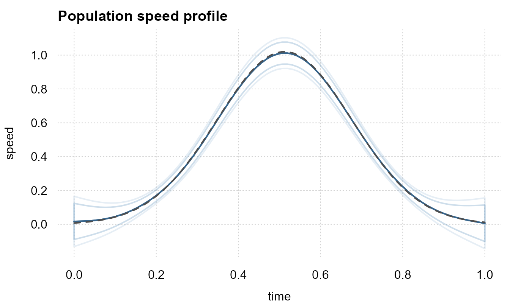
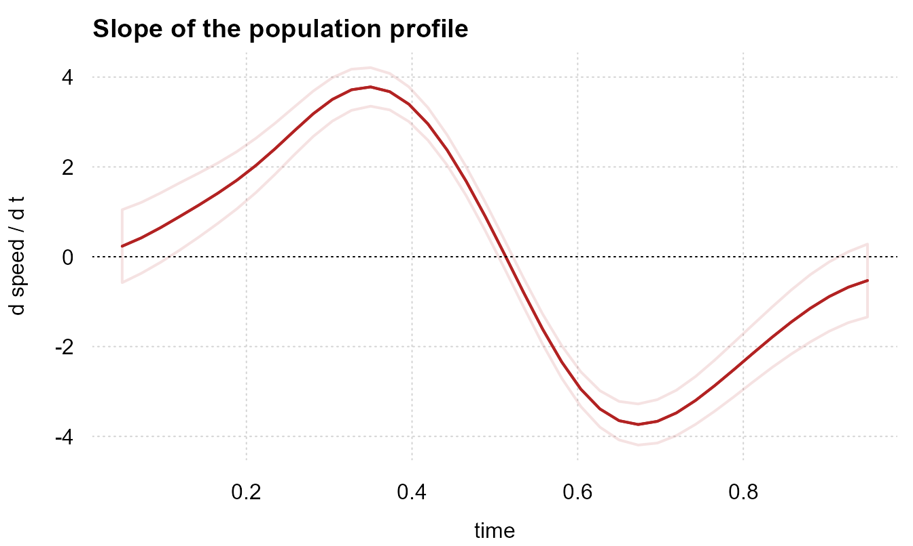

You fitted a smooth. Now you have to report it, and a plot of the fitted line with a shaded band is not yet a claim. This article shows how to make three claims that are, on a movement dataset where the truth is known:
- the curve lies inside a band, everywhere at once;
- the curve is rising here and falling there;
- the peak is at this time, plus or minus this much.
The data
A reaching movement has a bell-shaped speed profile. Twenty subjects each make twelve reaches; every subject’s profile has its own height and its own timing, and the measured speed is noisy.
set.seed(4)
n_sub <- 20
n_rep <- 12
n_t <- 30
peak <- function(t, h, s) h * exp(-0.5 * ((t - s) / 0.16)^2)
sub <- rep(seq_len(n_sub), each = n_rep * n_t)
d <- data.frame(
subject = factor(sub),
trial = rep(seq_len(n_sub * n_rep), each = n_t),
t = rep(seq(0, 1, length.out = n_t), times = n_sub * n_rep))
h_sub <- rnorm(n_sub, 1, 0.12)
s_sub <- rnorm(n_sub, 0.5, 0.04)
d$v <- peak(d$t, h_sub[sub], s_sub[sub]) + rnorm(nrow(d), 0, 0.06)
str(d, max.level = 1)
#> 'data.frame': 7200 obs. of 4 variables:
#> $ subject: Factor w/ 20 levels "1","2","3","4",..: 1 1 1 1 1 1 1 1 1 1 ...
#> $ trial : int 1 1 1 1 1 1 1 1 1 1 ...
#> $ t : num 0 0.0345 0.069 0.1034 0.1379 ...
#> $ v : num 0.0828 0.0154 0.0865 -0.0843 -0.0185 ...What is the population curve here? Not one subject’s. Each subject peaks at its own time, so the AVERAGE of the twenty curves is a wider, slightly lower bump than any of them. That average is what a population smooth estimates, and it is the thing to compare against:
pop_curve <- function(tt) {
rowMeans(vapply(seq_len(n_sub),
function(i) peak(tt, h_sub[i], s_sub[i]),
numeric(length(tt))))
}
c(peak_of_one_subject = max(peak(seq(0, 1, 0.001), 1, 0.5)),
peak_of_the_average = max(pop_curve(seq(0, 1, 0.001))))
#> peak_of_one_subject peak_of_the_average
#> 1.000000 1.020422Nothing below is told any of it.
Fit it
s(t) is the population curve and
s(t, subject, bs = "fs") gives every subject its own
departure from it, with one shared smoothing parameter. This is an
ordinary frm() call; nothing in this package changes how a
model is fitted.
fit <- frm(bf(v ~ s(t, k = 12) + s(t, subject, bs = "fs", k = 5)),
family = gaussian(), data = d)
VarCorr(fit)
#> s(t)
#> Name Std.Dev.
#> sd(wiggle) 1.2222
#> s(t,subject)
#> Name Std.Dev.
#> sd(wiggle) 0.52076
#> s(t,subject)
#> Name Std.Dev.
#> sd(wiggle) 0.34486
#> s(t,subject)
#> Name Std.Dev.
#> sd(wiggle) 0.270581. The curve, with a band that covers all of it
frm_curve() evaluates the fitted linear predictor on a
grid. re.form = NA drops the per-subject curves, so what
comes back is the POPULATION curve.
grid <- data.frame(t = seq(0, 1, length.out = 80))
cv <- frm_curve(fit, newdata = grid, re.form = NA, nsim = 20000, seed = 1)
cv
#> <frmtmb curve> value, 80 grid points, level 0.95
#> critical value: pointwise 1.96, simultaneous 2.7281 (mcse 0.012)
#> covariance checked against predict(se.fit = TRUE) to 1.11e-15 relative, in 32 predict() calls
#> t .estimate .se .crit .lower_ci .upper_ci .crit_sim
#> 1 0.00000000 0.01721029 0.05442608 1.959964 -0.08946286 0.1238834 2.728083
#> 2 0.01265823 0.01809867 0.05096266 1.959964 -0.08178630 0.1179836 2.728083
#> 3 0.02531646 0.01926231 0.04757044 1.959964 -0.07397404 0.1124987 2.728083
#> 4 0.03797468 0.02097641 0.04425974 1.959964 -0.06577109 0.1077239 2.728083
#> 5 0.05063291 0.02350881 0.04103768 1.959964 -0.05692357 0.1039412 2.728083
#> 6 0.06329114 0.02711400 0.03791211 1.959964 -0.04719236 0.1014204 2.728083
#> .lower_sim .upper_sim
#> 1 -0.13126859 0.1656892
#> 2 -0.12093171 0.1571290
#> 3 -0.11051382 0.1490384
#> 4 -0.09976785 0.1417207
#> 5 -0.08844541 0.1354630
#> 6 -0.07631339 0.1305414
#> ... 74 more rowsTwo intervals come back. .lower_ci and
.upper_ci are the ordinary pointwise interval: each point
of the curve, taken on its own, is inside its own interval 95 percent of
the time. .lower_sim and .upper_sim are the
SIMULTANEOUS band: the WHOLE curve is inside it 95 percent of the
time.
Those are different claims and the second is the one a figure invites. A 95 percent pointwise band drawn over 80 points does not cover the whole curve 95 percent of the time; it covers it far less often, because there are 80 chances to escape. The simultaneous critical value is the correction, and here it is about 2.7 rather than 1.96:
c(pointwise = cv$.crit[1], simultaneous = cv$.crit_sim[1],
ratio = cv$.crit_sim[1] / cv$.crit[1])
#> pointwise simultaneous ratio
#> 1.959964 2.728083 1.391905The simultaneous critical value is simulated, so it comes with its own Monte Carlo standard error. Report it, or a reader cannot tell your 2.72 from someone else’s 2.70:
attr(cv, "check")$crit_mcse
#> [1] 0.01203202The "check" attribute carries one more number, and it is
the one that licenses everything above. frmtmb exports no route to the
joint covariance of a grid prediction, so this package rebuilds it and
then checks its own answer against predict(se.fit = TRUE),
which is exported. The two agree to about twelve significant
figures:
attr(cv, "check")$cov_rel_error
#> [1] 1.110223e-15If they ever did not, frm_curve() would refuse rather
than report a band. The count of predict() calls the
rebuild cost is there too, and it is small: at re.form = NA
the per-subject coefficients contribute nothing and are skipped in
blocks rather than one at a time.
attr(cv, "check")$n_predict
#> [1] 32
tt <- cv$t
est <- cv$.estimate
tinyplot::tinyplot(x = tt, y = est, type = "l", lwd = 2,
col = "steelblue4", theme = "clean2",
ylim = range(cv$.lower_sim, cv$.upper_sim),
xlab = "time", ylab = "speed",
main = "Population speed profile")
tinyplot::tinyplot_add(x = c(tt, rev(tt)),
y = c(cv$.lower_sim, rev(cv$.upper_sim)),
type = "polygon", col = "#4682b422", border = NA)
tinyplot::tinyplot_add(x = c(tt, rev(tt)),
y = c(cv$.lower_ci, rev(cv$.upper_ci)),
type = "polygon", col = "#4682b444", border = NA)
tinyplot::tinyplot_add(x = tt, y = est, type = "l", lwd = 2,
col = "steelblue4")
tinyplot::tinyplot_add(x = grid$t, y = pop_curve(grid$t), type = "l",
lty = 2, col = "grey30")
The population curve is inside the simultaneous band at every grid point, which is what the band claims:
truth <- pop_curve(grid$t)
c(inside_simultaneous = mean(truth >= cv$.lower_sim & truth <= cv$.upper_sim),
inside_pointwise = mean(truth >= cv$.lower_ci & truth <= cv$.upper_ci))
#> inside_simultaneous inside_pointwise
#> 1 1Both bands cover here, and that is not a contradiction: the difference between them is a statement about REPEATED datasets, not about this one. Over many datasets the pointwise band misses the whole curve far more often than 5 percent of the time and the simultaneous band misses it 5 percent of the time.
Two cautions about what “the truth” means. A band covers the curve the MODEL is estimating, so with 7200 observations the sampling error is small and the penalty’s bias is most of what is left; and the estimand is the average of the twenty subject curves, not any one of them. Comparing against one subject’s profile would put the “truth” outside the band over part of the range, and the band would not be at fault.
2. Where the curve is rising
The slope of the curve is a curve of its own, and it has the same two intervals. Where its band excludes zero, the speed is changing.
g2 <- data.frame(t = seq(0.05, 0.95, length.out = 40))
d1 <- frm_curve_deriv(fit, var = "t", order = 1, newdata = g2,
re.form = NA, nsim = 20000, seed = 2)
rising <- d1$.lower_sim > 0
falling <- d1$.upper_sim < 0
c(rising_from = min(g2$t[rising]), rising_to = max(g2$t[rising]),
falling_from = min(g2$t[falling]), falling_to = max(g2$t[falling]))
#> rising_from rising_to falling_from falling_to
#> 0.1192308 0.4884615 0.5346154 0.9038462Read that as a sentence: the speed is increasing over the first interval and decreasing over the second, and both statements hold simultaneously at the stated level.
The step size is worth one paragraph. The derivative is a central
difference of the DESIGN, and its step defaults to a fraction of the
covariate’s range, set per order: 1e-6 of the range at
order 1 and 1e-4 at order 2. A single fixed step cannot
serve both, because the second difference divides by the square of the
step and turns floating-point cancellation into the dominant error long
before the first difference notices. Pass eps = to override
it.
c(order_1 = attr(d1, "eps"),
order_2 = attr(frm_curve_deriv(fit, var = "t", order = 2, newdata = g2,
re.form = NA, simultaneous = FALSE),
"eps"))
#> order_1 order_2
#> 9e-07 9e-05
t2 <- d1$t
tinyplot::tinyplot(x = t2, y = d1$.estimate, type = "l", lwd = 2,
col = "firebrick", theme = "clean2",
ylim = range(d1$.lower_sim, d1$.upper_sim),
xlab = "time", ylab = "d speed / d t",
main = "Slope of the population profile")
tinyplot::tinyplot_add(x = c(t2, rev(t2)),
y = c(d1$.lower_sim, rev(d1$.upper_sim)),
type = "polygon", col = "#b2222222", border = NA)
tinyplot::tinyplot_add(x = t2, y = d1$.estimate, type = "l", lwd = 2,
col = "firebrick")
abline(h = 0, lty = 3)
3. Where the peak is
A movement paper reports the TIME of peak speed, and usually reports
it without an interval, because nothing hands one over.
frm_curve_feature() does. The peak solves
f'(t) = 0, so perturbing the fit moves it, and the
implicit-function theorem turns the curve’s covariance into the variance
of its location:
var(t*) = var(f'(t*)) / f''(t*)^2
pk <- frm_curve_feature(fit, var = "t", type = "maximum", newdata = g2,
re.form = NA)
pk
#> <frmtmb curve feature> maximum, 1 found, level 0.95
#> covariance checked against predict(se.fit = TRUE) to 8.88e-16 relative
#> .feature .var .estimate .se .lower_ci .upper_ci .value .value_se
#> 1 maximum t 0.513161 0.003104161 0.507077 0.5192451 1.012546 0.03321659The average curve peaks near t = 0.5, and the estimate
is inside a few hundredths of it. Note that .value_se is
NOT inflated by the uncertainty in where the peak is: at a stationary
point the derivative of the height with respect to the coefficients
loses its location term, because f'(t*) is zero there. The
height’s standard error is the ordinary pointwise one at
t*.
Movement onset is the same calculation against a threshold instead of against zero. Every crossing the grid brackets comes back, so a threshold the profile passes twice gives two rows:
frm_curve_feature(fit, var = "t", type = "crossing", at = 0.2,
newdata = g2, re.form = NA)
#> <frmtmb curve feature> crossing, 2 found, level 0.95
#> covariance checked against predict(se.fit = TRUE) to 1.55e-15 relative
#> .feature .var .estimate .se .lower_ci .upper_ci .value .value_se
#> 1 crossing t 0.2150498 0.008193858 0.1989901 0.2311095 0.2 0.01710815
#> 2 crossing t 0.8101015 0.008411763 0.7936148 0.8265883 0.2 0.01828822Per-subject curves
Drop re.form = NA and supply the grouping column, and
the same three functions describe THAT subject’s curve, with the
subject’s own deviation and its uncertainty included.
gs <- data.frame(t = seq(0.05, 0.95, length.out = 40),
subject = factor(3, levels = levels(d$subject)))
pk3 <- frm_curve_feature(fit, var = "t", type = "maximum", newdata = gs,
re.form = NULL)
pk3[, c(".estimate", ".se", ".value", ".value_se")]
#> <frmtmb curve feature> , 1 found, level
#> covariance checked against predict(se.fit = TRUE) to NULL relative
#> .estimate .se .value .value_se
#> 1 0.5388005 0.001575399 1.077853 0.007287812Subject 3’s own peak time, against the population peak above. Repeat over subjects and you have per-subject peak latencies with standard errors, which is what a second-level analysis wants as input.
What to report
- The simultaneous band, not the pointwise one, whenever the figure invites a statement about the shape of the curve.
- The simultaneous critical value WITH its Monte Carlo standard error.
- For a feature, the estimate and its interval, and say which derivative the implicit-function delta method was applied to.